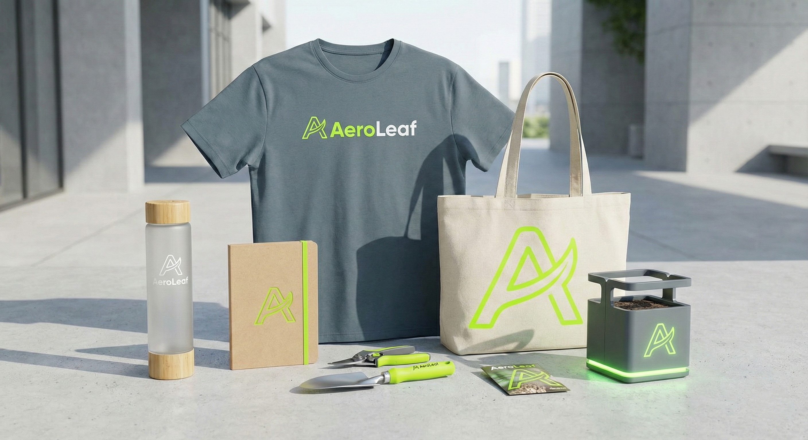
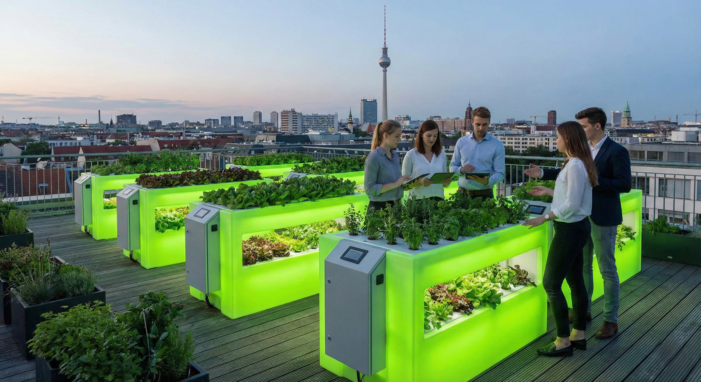
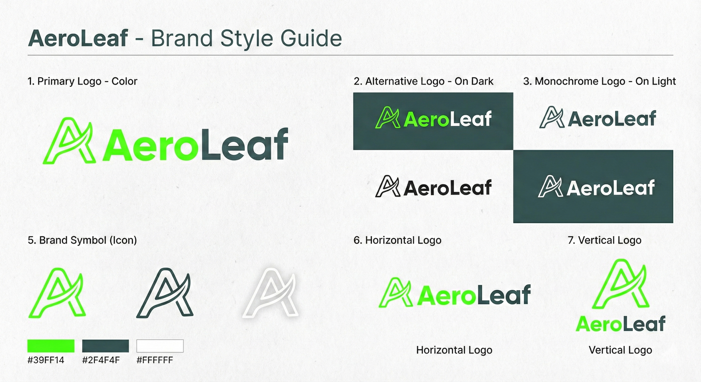
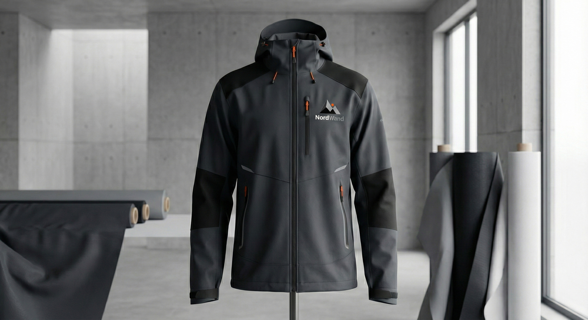
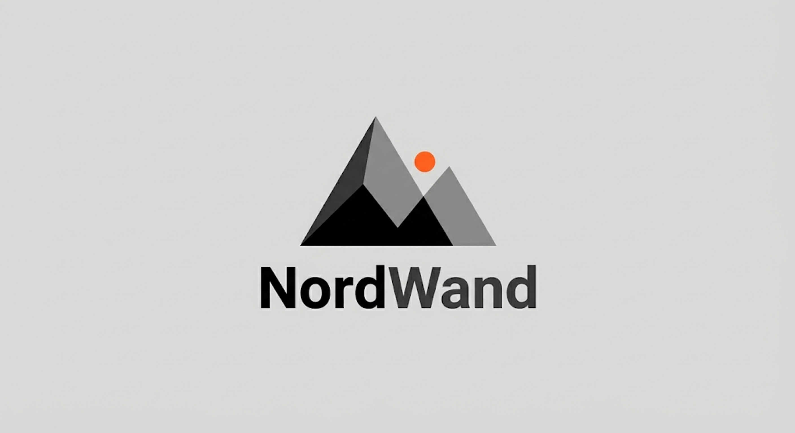
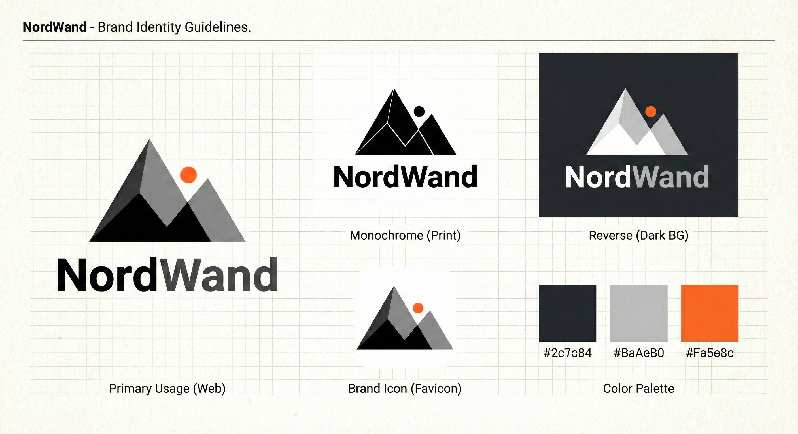
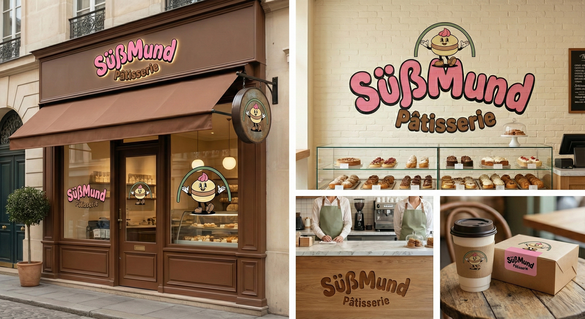
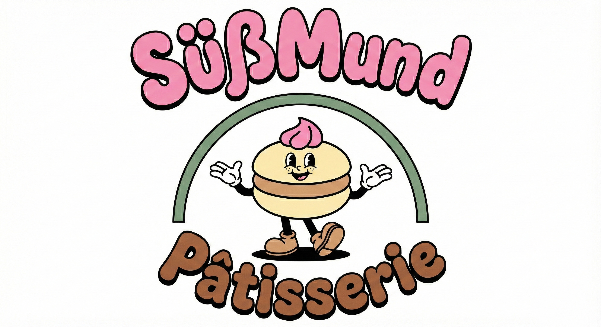
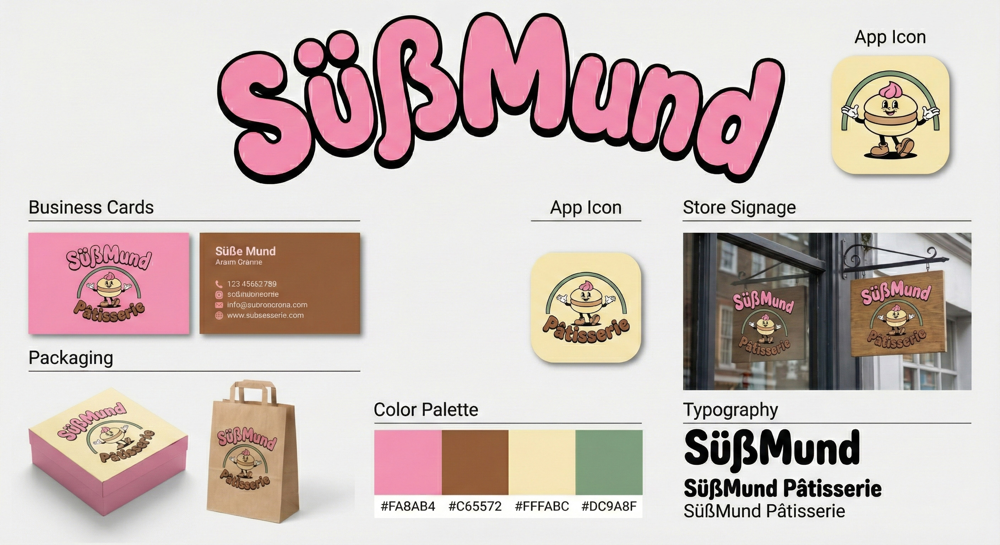

A Berlin-based tech startup designing smart hydroponic systems for growing vegetables in small apartments and offices without direct natural light. Targeting eco-conscious urban professionals (25–40), the brand embodies innovation, cleanliness, efficiency, and a futuristic yet organic personality.



A Hamburg-based premium technical clothing brand for extreme climates, focused on 100% recycled materials and urban monochromatic aesthetics. Targeting adventurers, climbers, and rainy city dwellers who value the 'Gorpcore' aesthetic. The brand embodies resilience, stoicism, and minimalism.



A Cologne-based boutique pastry shop that blends French pâtisserie with traditional German ingredients like marzipan and forest berries. Targeting couples, wedding planners, and lovers of affordable luxury. The brand embodies delicacy, sweetness, sophistication, and romance.


Weitere Logo-Projekte und Branding-Arbeiten sind auf Behance zu finden.